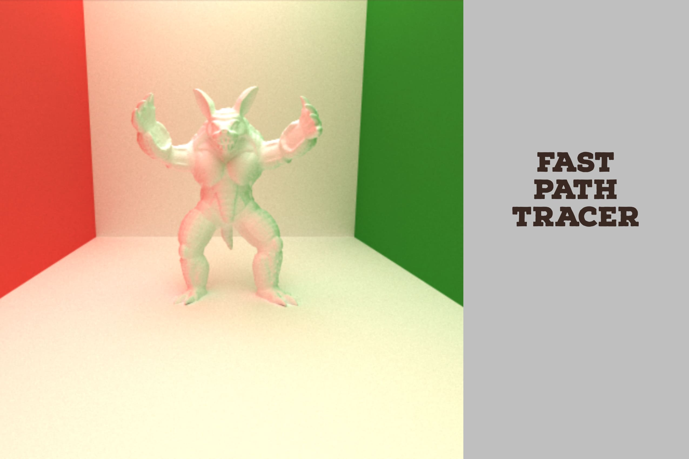
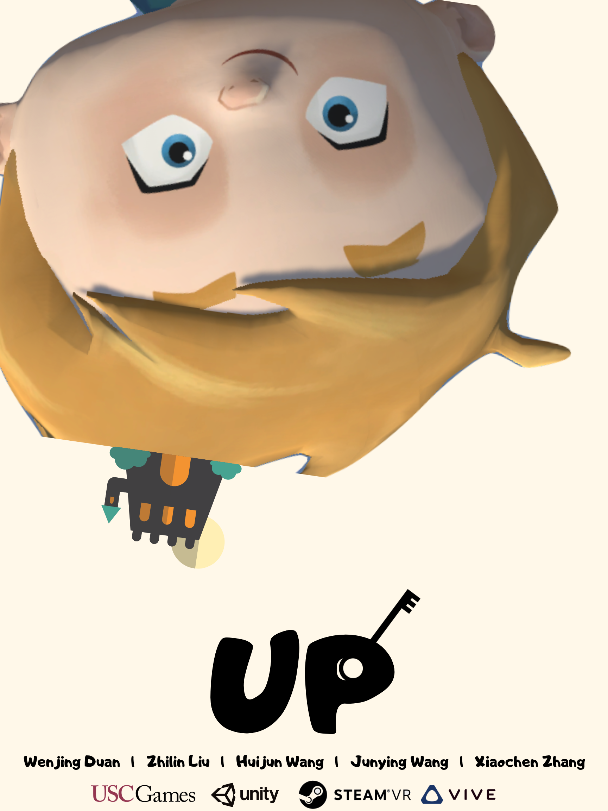

List of Projects
Welcome to my project gallery! These are some of my favorite projects, spanning motion systems, game design, graphics algorithms, and multimedia systems.
Browse the list below for more details on each project.

Create a Dance (Motion Retargeting Based on Deep Learning)
How do you create your own motion capture data, and how can those motions drive any 3D avatar? This project, Create a Dance, focuses on solving exactly that problem. Inspired by the popular game Just Dance, I built a pipeline that extracts 3D motions from 2D videos and uses them to drive any rigged 3D avatar. With this system, you can map a video to motion data and make 3D avatars move just as we do — let's create a dance!

Apocalypse (First-Person Shooter Game)
Apocalypse is my first game project — a first-person zombie shooter in which you fight through waves of zombies to spark a pivotal revolution. Regain your courage, pick up your weapon, and step into Apocalypse! If you would like to know more about how I made this game, check out my blog. I hope you enjoy the trip!

Apocalypse Legend (Multiplayer Shooter Game)
Apocalypse Legend is the next chapter of Apocalypse — a multiplayer shooter game built on UNet. Each player can create a private account, log in, and play as part of a team, collaborating with others to carry out a significant revolution.

UP (Virtual Reality Escape Game)
Our cute avatar Dallas is a smart and adventurous boy. One day he wakes up and finds that he is no longer in the real world. "Where am I?" Dallas is trapped inside his own dreams, and he needs to escape. UP is a standalone VR game built on SteamVR and the HTC Vive. This was a team project — many thanks to all my WHAT'S UP teammates for their great contributions!

Fast Path Tracer (k-d Tree for Path Tracing)
Have you ever wondered why the 3D characters we place in a game environment end up as 2D images running frame by frame on our screens? The answer lies in the rendering techniques behind the screen. Path tracing is a rendering technique that evolved from classic Whitted-style ray tracing. In this project, I designed a simple, fast path tracer with a k-d tree of bounding boxes, which efficiently improves the running time.

Hypervideo (Hyperlinked Interactive Video)
One of the essential properties of digital multimedia content is interactivity. Hypervideo is a video stream that contains embedded, user-clickable anchors, allowing navigation between the video and other hypermedia elements. It combines video with a non-linear information structure, letting users make choices based on the content of the video and their own interests. This was a team project — thanks to my teammate Ivy for the great contributions!
Create a Dance
Is it possible to use motions from 2D videos to drive any rigged 3D avatar? The answer is yes. In this project, I built a novel neural-network-based motion retargeting system. The pipeline first extracts 2D keypoints from videos, then predicts 3D joint locations and rotations using deep learning. From the predicted joints, we can generate BVH files, which are used for the motion retargeting step.

What is motion retargeting? Retargeting is the process of using a forward-kinematics animation recorded for a given source character to control the movements of one or more different target characters, which may have very different properties, scale, skeletal structure, limits of motion... This process essentially creates a mapping between the skeletal structure of the source character and the skeletal structure of the target character. It analyzes the movements carried out by the source character, determines how those movements should be reflected by the target character, and uses the inverse kinematics solver to find a final position for the target character that best reflects the original animation.
As you can see in the demo on the left, there are still some limitations, which motivate future research. The first is that most research papers only use sparse 2D keypoints (22 or 25 joints) to supervise the learning process, which may be insufficient for effective training; we need new ways to obtain more accurate predictions. The other is that current motion retargeting methods struggle to handle more complex 3D models with complicated skeleton topologies. If you want to know more details about this project, check my blog.
Apocalypse & Apocalypse Legend
Hey, welcome to Apocalypse! This was my first time writing a game independently and my first time learning Unity, and I would like to share the game design experience with you!
The project contains two parts: the first is the design of a first-person zombie shooter; in the second, I added new features and exciting interactions and converted the FPS game into a multiplayer FPS. It is even more fun when you play with your friends in the same game environment.

It is hard to tell what is real and what is not — with the development of artificial intelligence, perhaps one day it will be hard to tell the difference between machine and human. Or maybe the next time you open the door to the future, you will be opening Pandora's box.
Inspired by the TV series Westworld, I set the game in the era of AI, even though our main character is still dressed in a Middle Ages suit... Let's give our player a name: Seven, the serial number he received when he was designed by humans.
Seven is, of course, an AI. Unlike his brothers and sisters produced on the same assembly line, he has his own mind and emotions. That sounds creepy, but he is still under human control. His first challenge in this game is a zombie fight: Seven decides to start a revolution, fight for himself, and push through all the difficulties.
After he wins the war, will he start a new life as a normal human, or is he still in a sandbox created by humans?
Let's open the first page of our APOCALYPSE!
If you want more detail on how to design this sort of first-person shooter, or how to use UNet to add multiplayer functionality, check my blog here.
UP
This was a team project by WHAT'S UP — thanks to the whole team for their great contributions! UP is a standalone, first-person VR game built around physics-based interaction. Dallas is a boy who lives a happy life until, one day, he finds out that he is being controlled by an unknown force. He needs to escape.

This game is inspired by the cute little character from Human: Fall Flat. Our main character deals with challenges from his surroundings using his rubber hands.
One of our main goals is to give players the immersive experience of touching game objects and holding tools with physical properties.
As a player, your goal is to escape by getting through puzzles, dangers, and surprises using tools and wits. Once you put on the VR equipment, you are the main character! Now you are Dallas — use the VR controllers to find your way out. You will enter a new scene full of adventures and challenges. The VR controllers are your hands: press their buttons to grab tools, such as a rope. To move forward or turn, simply walk in real life — the VR headset adjusts your viewport as you turn your head.
Fight on, Dallas!
And if you are wondering what happened in Dallas's dream, check out our game trailer here.
Fast Path Tracer
I am a fanatic game lover, and beyond game applications themselves, I also like to look at the rendering techniques behind the games. When you explore those techniques, you may hear buzzwords like ray tracing, path tracing, and real-time rendering. Here I built a simple path tracer with a k-d tree data structure, which reduces the computation time of rendering.
In path tracing, instead of sending out one ray, tens, hundreds, or even thousands of rays are sent out for each rendered pixel. Path tracing can solve more complex lighting situations through the use of the Monte Carlo integration method, and it is capable of reproducing a more complex light environment.
Path tracing is too slow for real-time applications like video games. Ray tracing was also slow, but with the development of consumer-grade hardware, real-time ray tracing in video games has become possible. In this project, to understand the limitations of path tracing, I designed a simple path tracer. The intersections between rays and objects are simplified into intersections between rays and bounding boxes, and using a k-d tree to store these bounding boxes is key to improving the running time. You can check the code here.
Hypervideo
This is a team course project from Multimedia Systems Design — thanks to my teammate Ivy (Ran He) for the great contributions! One of the essential properties of digital multimedia content is interactivity, and interactive multimedia content is available in many forms today. This application contains two parts: an authoring tool for setting up hyperlinked videos, and an interactive video player for interacting with hypervideos.
Hypervideo is a displayed video stream that contains embedded, user-clickable anchors, allowing navigation between the video and other hypermedia elements. It is analogous to hypertext, where a reader clicks on a word in one document to retrieve information from another document or another place in the same document. Hypervideo thus combines video with a non-linear information structure, allowing users to make choices based on the content of the video and their own interests.
* Remarks: A note on the references and resources used on this page. For the Create a Dance demo video, since Just Dance is one of my favorite games, I used a clip from the Just Dance 2020 trailer — an amazing game trailer.